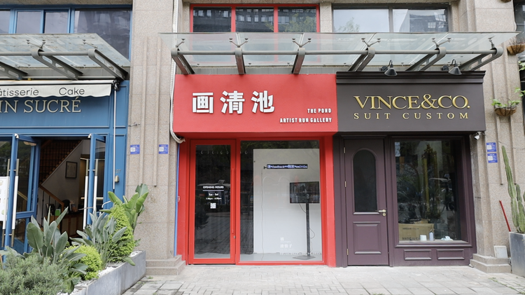

always virtually floating..... hua xi zi "cecilia" ...
捕/Capture: A Solo Exhibition (2023)

The Pond Gallery is an artist-run studio, a one-year project by Tan Yubing. This exhibition 捕/Capture couldn’t happen without the invitation, hosting, support and care of Yubing and the Pond Gallery. All works were made (or newly-adjusted site-specifically) throughout the two-week’s residency time for the research, the shoot, the install and the performance happened in Chengdu.
02/18/23 - 03/06/23, Chengdu
Exhibition Documentation (night view)
It is a site-specific exhibition where all works in the space were responding to the local environment of the former-store and now art space, which is located in the residential commercial street in a broader high tech district where Alibaba and Tencent office buildings are at.
I have always only walked pass neighborhoods and gleaned what i saw, otherwise peaking in. Being inside, I have been feeling that I was locked up in a transparent vacuum. Watching others while being watched by various phone cameras of others and surveillance cameras. We also capture daily and scan many QR codes to prove our existence.
Light has been captured. Data was captured. I am captured.
At the store front, behind the glass window, I made a one-hour long video to be displayed on loop. I call this video:
hua清池游记/hua qing chi travel notes
The Pond Gallery named itself “huà qing chí” with a pun: the previous tenant that was there had a foot bath/massage store that took the name “huá qing chí foot bath,” which is named after “huá qing chí” (huaqing spring pool) where ancient royals, Yang Guifei and Emperor Taizong of Tang Dynasty, took baths. It’s my second time visiting Chengdu and first time walking around this neighborhood where the Pond Gallery and many tech offices are located, which could feel like downtown Seattle or Silicon Valley.
In the video, I reflected through my own travel experiences only stopping by in the tourist’s eyes, gleaning light and culture of the place. I reflect on the need to study a place’s cultural and historical background, including going down into the root and pun of its name, which might contain a certain narration and memory of the place. Between personal (camera) memory and collective memory.
image_exchange (2023-ongoing)

Audience who have just arrived at the space and just leaving the space will have the chance to interact with the QR code/website.
Following the text on the website, we can choose to upload an image or take an image with our phone cameras. We are also told to leave a message along with the image. As we successfully upload the image, the browser will redirect to a page of a "fortune poetry": a new image is now randomly drawn from the pool of images and messages, sent to us along with the message left with that image, which has been uploaded by someone else who came across this website or QR code before.
降B调的玻璃罩/ glass cover in b flat
Acrylic Transparent Dome (80cm), Acrylic Transparent Round Panel (80cm), 7 Swivel Casters;
TP-LINK Surveillance Camera, Android System Projector, Sound Mixer, Microphone Pickup Mics (6 Mics), Stereo USB Speaker, USB Cooling Fan;
Power Cord, Extension Cord, Audio Cable, Audio Adapter, Wire Fixer, Power Strip;
Wire Fastening Tape, Double-sided Tape, Transparent Single-sided Tape, Film Tape;
Medium-sized Circular Mirror, 2 Small Circular Mirrors, 2 Glass Balls, 16mm Film Transparent Leader, Chest Microphone;
WiFi, TP-LINK APP; L-shaped Corridor, Railings, Walls.
A home surveillance camera is put inside a transparent “glass” dome, shooting live footage and taking sound from its surroundings. The projector below the camera projects also in real-time what is being shot while speakers play sound with feedback the noise inside the ball. The ball can be moved by visitors.
The feedback noise echos back and forth inside the dome, which penetrates throughout the space, sounding as if it’s in a B Flat tune.